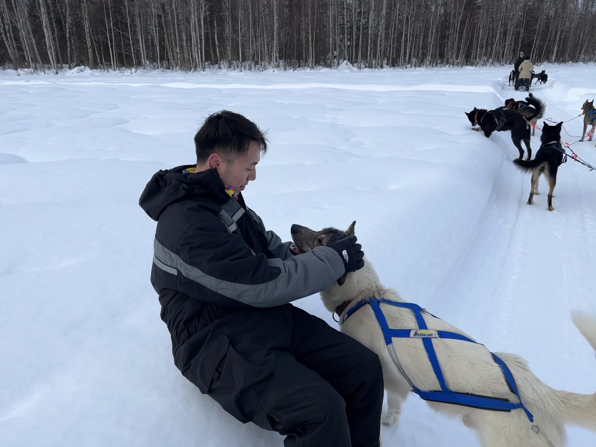
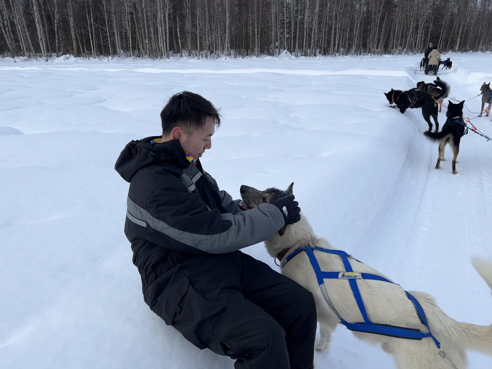

Things to do
Dog Sled Tour
After getting to know the dogs a bit, they hooked up a dog sled with 8 dogs, while the rest of the dogs were super excited and also wanted to come for the ride. Off we go on the sled. It’s amazing that the 8 dogs pulled us easily through the snow. We stopped at a couple of places for pictures just taking in the view These dogs are over the top friendly and from the moment you arrive to the moment you leave they will be by your side.
 

Snowmobile trip
One of the best ways to access Alaska’s vast backcountry in winter for both visitors and locals is on a snowmobile. Not only are snowmobiles fun and fast, they serve as an essential mode of transportation for locals to places that would be otherwise inaccessible in winter.
Ice Fishing
Enjoy Ice Fishing on a Beautiful, Clear Lake in Fairbanks. Our guides cut fishing holes through the ice (watch or assist if you like), induct us on traditional ice fishing techniques, process the catch, and cook it inside a cabin into a delicious light fish meal over the wood fired stove. You can even choose your time fishing at night so You can see the aurora.
Hot Spring
Chena Hot Springs Resort
Chena Hot Springs is a wonderful year round destination near Fairbanks that gives you a chance for a hot springs soak along with plenty of other fun including the ice museum, hiking, skiing and northern lights viewing during northern lights season. It is absolutely worth the trip out from Fairbanks. Water was very warm and nice to be in. There are cooling fountains within if you get too hot. Even with snow and ice surrounding us we stayed warm. Towels cost $5 but you can bring your own. There are lockers for some quarters to store your layers/clothes. Bathrooms had showers and blow dryers.
Aurora
Fairbanks, Alaska is well known as one of the best places to see the Northern Lights in the world, since visitors who stay for at least 3 nights during aurora season this is the most impressive part of my travel. The main auroral band crosses the state in an arc north of the Alaska Range, which makes Fairbanks and the surrounding area Alaska’s sweet spot for northern lights viewing. Many hotels in the Fairbanks area specialize in providing aurora-related amenities and experiences.